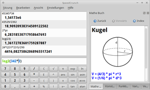

SpeedCrunch
Dieser Artikel wurde für die folgenden Ubuntu-Versionen getestet:
Ubuntu 14.04 Trusty Tahr
Zum Verständnis dieses Artikels sind folgende Seiten hilfreich:
SpeedCrunch  ist ein mächtiges Taschenrechnerprogramm, das für Linux, Mac OS X und Windows geschrieben ist. Die grafische Benutzeroberfläche ist mit Qt umgesetzt und sehr anpassbar. Für Windows gibt es auch eine portable Version, die keiner Installation bedarf. Neben Komfortfunktionen bietet SpeedCrunch auch ein durchsuchbares Verzeichnis von Formeln und Variablen.
ist ein mächtiges Taschenrechnerprogramm, das für Linux, Mac OS X und Windows geschrieben ist. Die grafische Benutzeroberfläche ist mit Qt umgesetzt und sehr anpassbar. Für Windows gibt es auch eine portable Version, die keiner Installation bedarf. Neben Komfortfunktionen bietet SpeedCrunch auch ein durchsuchbares Verzeichnis von Formeln und Variablen.

Funktionen¶
SpeedCrunch weist mehrere Funktionen auf, die nicht in anderen Rechnerprogrammen enthalten sind. Die folgende Liste zeigt einen Ausschnitt:
Chronik/Verlauf der eingegebenen Rechnungen, die beim Schließen des Programms erhalten bleibt
Farbliche Hervorhebung von Klammern, Variablen und Zahlen
Ein integriertes Mathematikbuch, dass die wichtigsten Formeln und Variablen bereithält
Sitzungen, d.h. Rechnungsverläufe können in Dateien gespeichert und geladen werden
Automatische Vervollständigung (etwa bei Variablen)
Verschiedene Ergebnisformate (Binär, Oktal, Dezimal, Hexadezimal)
Tastenkombinationen für wichtige Funktionen (z.B. Umschalten des Winkelmaßes)
Unterstützung für verschiedene Darstellungsweisen (wissenschaftlich, ingenieurwissenschaftlich, …)
Verschiedene Einstellungen für Dezimalstellen
Anpassbare Benutzeroberfläche
Unterstützung für RTL-Sprachen
etc.
Installation¶
Möchte man das Programm benutzen, kann man es ganz leicht über die Paketverwaltung installieren[1].
speedcrunch
 mit apturl
mit apturl
Paketliste zum Kopieren:
sudo apt-get install speedcrunch
sudo aptitude install speedcrunch
Danach steht das Programm im Anwendungsmenü über "Zubehör -> SpeedCrunch" oder in der Unity Dash zur Verfügung[2].
Tastenkombinationen¶
Viele Funktionen von SpeedCrunch können über Tastenkombinationen gesteuert werden. Die folgende Tabelle zeigt häufig verwendete Funktionen und deren Tastenkombinationen. Für Fehleingaben steht zwar keine Korrekturtaste zur Verfügung, aber eine editierbare Eingabezeile, die den gleichen Zweck erfüllt.
| Sitzungen verwalten | |
| Funktion | Tastenkombination |
| Sitzung Laden | Strg + L |
| Sitzung Speichern | Strg + S |
| SpeedCrunch beenden | Strg + Q |
| Ansicht ändern | |
| Funktion | Tastenkombination |
| Tastenfeld ein-/ausblenden | Strg + Alt + K |
| Mathematikbuch öffnen/schlließen | Strg + 1 |
| Konstanten-Katalog ein-/ausblenden | Strg + 2 |
| Funktionen-Katalog ein-/ausblenden | Strg + 3 |
| Variablen-Katalog ein-/ausblenden | Strg + 4 |
| Verlauf öffnen/schließen | Strg + 5 |
| Menüleiste ein-/ausblenden | Strg + Alt + M |
| Statusleiste ein-/ausblenden | Strg + Alt + B |
| Einstellungen bearbeiten | |
| Funktion | Tastenkombination |
| Ergebnisformat in „Binär“ ändern | F5 |
| Ergebnisformat in „Oktal“ ändern | F6 |
| Ergebnisformat in „Dezimal“ ändern | F7 |
| Ergebnisformat in „Hexadezimal“ ändern | F8 |
| Winkelmaß in „Bogenmaß“ ändern | F9 |
| Winkelmaß in „Grad“ ändern | F10 |
| Bearbeitung | |
| Funktion | Tastenkombination |
| Letztes Ergebnis kopieren | Strg + R |
| Ausdruck markieren | Strg + A |
| Funktion einfügen | Strg + F |
| Variable einfügen | Strg + I |
| Variable löschen | Strg + D |
| Ausdruck löschen | Esc |
| Verlauf löschen | Strg + Alt + N |
 Übersichtsartikel
Übersichtsartikel- Erstellt mit Inyoka
-
 2004 – 2017 ubuntuusers.de • Einige Rechte vorbehalten
2004 – 2017 ubuntuusers.de • Einige Rechte vorbehalten
Lizenz • Kontakt • Datenschutz • Impressum • Serverstatus -
Serverhousing gespendet von